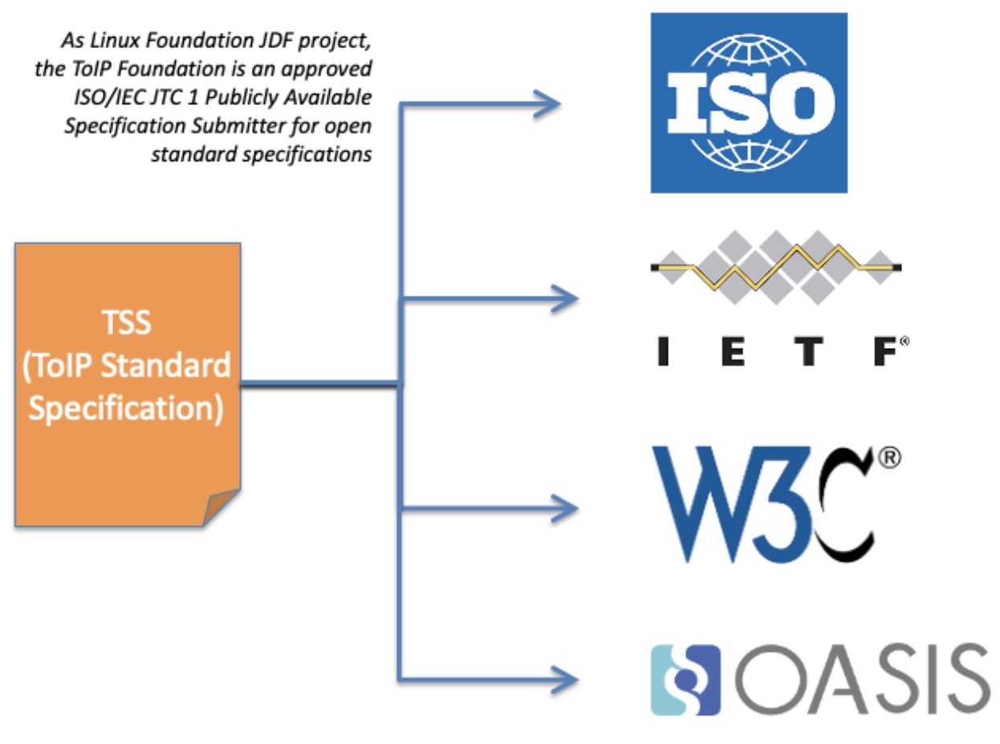
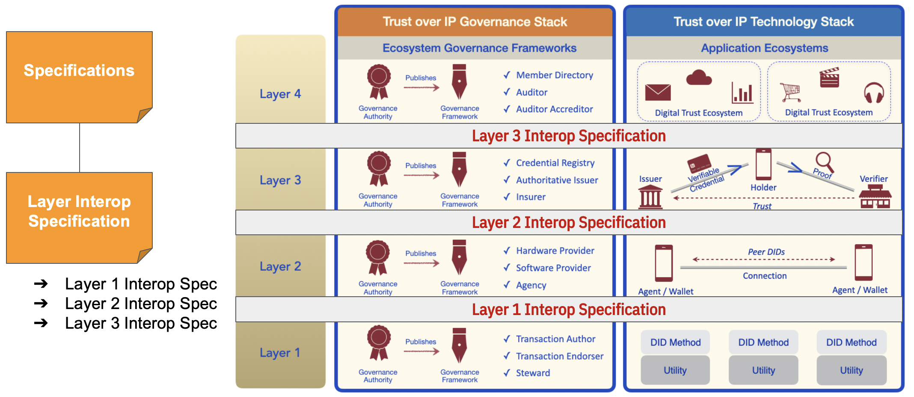
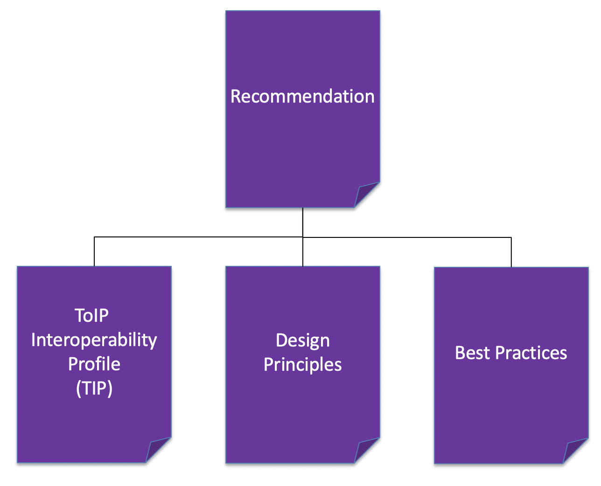
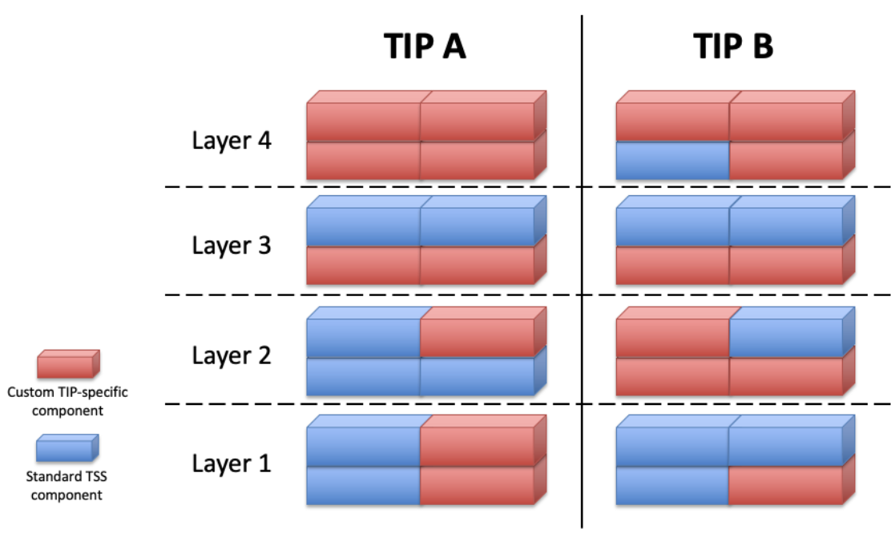
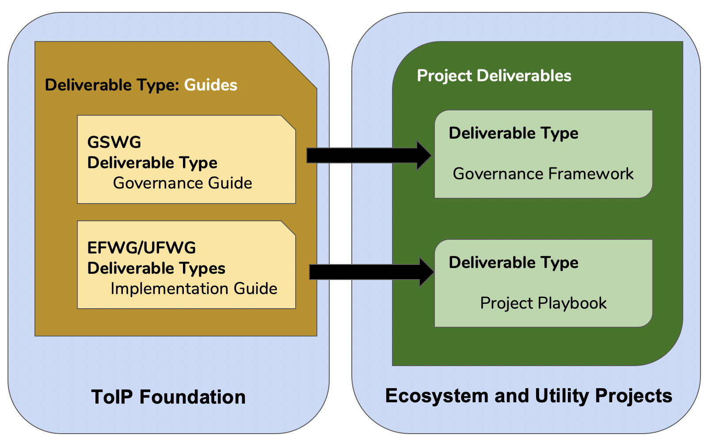

ToIP Deliverables¶
The ToIP Foundation produces a wide range of deliverables that are organized under the five (5) categrories:

| Deliverable Type | Designed to be: |
|---|---|
| Specification | Implemented (in code) |
| Glossary | Incorporated (in other documents) |
| Recommendation | Followed (in practice) |
| Guides | Executed (in operation) |
| White Paper | Understood (to support decisions) |
Table 1: The primary differences between the five types of deliverables.
Deliverable Types¶
Specifications¶
The most common deliverable under a JDF charter is a specification. At the ToIP Foundation, a standards-track specification is called a TSS (ToIP Standard Specification). This acronym was chosen to be our analog to the IETF RFC (Request for Comment).
Although most closely associated with technical standards (e.g., the province of the Technology Stack WG), a TSS may also be produced by the Governance Stack WG (for example to define requirements for discovery, identification, or machine-readability of governance frameworks). Any technically-oriented ToIP Foundation WG may produce a TSS.
A TSS is distinguished from other deliverables because it can be the basis for:
- Implementations in source code. A key test of any open standard specification is whether it can have multiple independent interoperable implementations in executable software code—in any choice of programming language.
- Interoperability testing. Conformance requirements in a specification can be used to create neutral, objective, machine-verifiable interoperability test suites.
- Certification. Interoperability testing can be the basis for official certification programs, whether offered by the ToIP Foundation, other Linux Foundation projects, or independent third party certification labs.
- Official standardization. Any specification produced under a JDF charter has the necessary intellectual property rights protections to be advanced to an official standards development organization (SDO—also called a standards setting organization* or SSO). Examples include ISO (with whom the Linux Foundation JDF projects have a special relationship), IETF, W3C, OASIS, etc. For ToIP specifications, this is the specific role of a ToIP Standard Specification (TSS), as described below.
Figure 2 illustrates this final point that a TSS produced under a Linux Foundation JDF project has a direct path to official standardization in a recognized SDO.

Figure 2: TSS has a direct path to become official standards.
There are three flavors of TSS depending on where the content originates:
- Internal: This type of TSS is developed entirely by a ToIP WG—for example the Overlays Capture Architecture (OCA) spec from the Decentralized Semantics WG.
- External: This is a profile of an open standard specification from another SDO—for example a profile of the W3C Decentralized Identifiers (DIDs) Core 1.0 spec.
- Hybrid: A combination of Internal and External.
Layer Interoperability Specifications¶
One of the responsibilities of the Governance and Technology Stack WGs is to publish specifications that address how the layers of the ToIP Stack SHOULD achieve interoperability.
As depicted by Figure 3, a Layer Interoperability Spec is a type of specification that would be used by open-source implementations supporting each ToIP Layer.

Figure 3: Layer Interoperability Specs are examples of a TSS.
Glossaries¶
In both technology and legal architecture, the definition of terms are a fundamental building block. One of the most important functions of the ToIP Foundation is to develop a shared conceptual framework for describing and understanding decentralized digital trust infrastructure—and then turn that into a set of concrete glossaries of shared terms that meet the needs of specific communities and stakeholders. Glossaries are the explicit deliverables of our Concepts and Terminology Working Group, however all WGs and TFs are invited to contribute to this effort.
Recommendations¶
Any ToIP working body can produce a recommendation it advises ToIP implementers to follow. There are three specific types of recommendations that are particularly important for ToIP as shown in Figure 4:

Figure 4: Three specific types of ToIP recommendations.
ToIP Interoperability Profiles (TIPs)¶
A TIP is a special type of recommendation that is incubated within the Technology Stack WG).
Intended as as evidence of a proven solution architecture, a TIP provides specific guidance to interested ToIP Layer 4 Ecosystem Projects. Analogous to a cooking recipe, a TIP suggests how to assemble an Ecosystem Project around a profile of use cases backed by technology that has been implemented and tested by a community of vendors.
A TIP is designed to play a specific role in the evolution of the ToIP Technology Stack. Unlike a TSS, which represents a universally-accepted component of the stack, a TIP represents a profile of a specific set of components and protocols designed to achieve vertical interoperability —- interoperability that works up and down all four layers of the ToIP technology stack even if it is not yet interoperable with other TIPs.
A TIP is created by a specific community of stakeholders to meet their needs at a specific point in time. In short, a TIP provides a “full stack” solution architecture that has demonstrated real adoption in the market.
By “full stack”, we mean that a TIP must define all the technical components needed to meet the architectural requirements of all four layers of the ToIP stack. As shown in Figure 5, some of those components will be TSS—standards that already have gained Foundation-wide approval. Other components—particularly those that address gaps in the stack can be feed back into the TSWG for further refinement of the ToIP stack.

Figure 5: Conceptual diagram of how a TIP puts together standard TSS components and custom TIP components like Lego blocks in order to define a full stack solution.
To be clear, different communities of stakeholders can produce different TIPs that are not yet interoperable with each other. This is acceptable as a step toward the longer-term goal of a fully interoperable ToIP stack. Having a relatively small number of TIPs co-evolve in the market, generating measurable market feedback about adoption, is an incremental standardization strategy that addresses the reality that convergence on a complete set of TSS for the ToIP stack will not happen in a single bound. Instead, with TIPs, stakeholders can deliberately harness the natural evolution of technology, standardization, and adoption to drive convergence in a series of incremental steps—each of which can be proven out by actual market metrics.
Given its unique purpose, a TIP is a very robust type of recommendation that may include a number of constituent components. Designed, refined, and supported by a community of stakeholders, a TIP can incorporate all these key factors in successful market adoption:
- Use cases: Specific examples of the market problems the TIP is designed to solve.
- Design principles: Guidelines for how market requirements should be translated into architecture and technology decisions.
- Features: Documentation that clearly communicates the design, architecture, features, and benefits of a TIP to the digital trust ecosystems targeted for adoption.
- Best practices: Guidance for implementers and recommendations—particularly for interlock with the ToIP Governance Stack.
- Interoperability testing: Community-driven test suites and result certification.
- Vendor support: Proven implementations by vendors who can demonstrate the real-world interoperability of their solutions.
- Adoption case studies and metrics: Quantifiable evidence in the marketplace of real market impact
Design Principles¶
A second key type of recommendation is not itself a specification, but a set of principles that help guide the development of other ToIP deliverables. Design principles apply to all types of architecture, so they are highly relevant to both the governance and technical sides of the ToIP stack. They are a generalization of design patterns that originated in building architecture and have spread to software architecture and other fields. Design Principles will minimally be leveraged by TIPs.
Best Practices¶
Best practices are based on practical experience with implementing solutions and learning what does and does not work. They are relevant to every area of ToIP infrastructure, both within our Stack WGs (Governance and Technical) and our Foundry WGs (Utility and Ecosystem).
Guides¶
A guide describes how a particular set of stakeholders intend to use ToIP specifications, definitions, and recommendations to instantiate a new governance authority and/or governance framework for a trust community.
There are two (2) flavors of guides:
- Governance Guide: Produced by the Governance Stack WG (GSWG), these work-products provide generalized domain guidance for how an ecosystem project may apply governance concepts to the creation of a specific governance framework.
- Implementation Guide: Produced by the Foundry Working Groups, these work-products provide generalized domain guidance for how an ecosystem project should define an execution plan ("project playbook") for the creation of a specific ecosystem or utility project.

Figure 6: Guides are building blocks for project specific governance frameworks works and project playbooks.
To use the analogy of building a house, a project playbook (or plan) might include the blueprints, cost estimates, and construction schedule—everything an owner needs to be ready to build. The project playbook would be an instantiation of a guide based on the builders prior experience in building that specific style of house under similar conditions. IMPORTANT: The actual building of the house takes place outside the ToIP Foundation. In other words, the ToIP Foundation is not a governance authority and does not publish operational governance frameworks or project playbooks. Our job is to develop the specifications and guides necessary to help bootstrap the creation and maintenance of ecosystem and utility projects.
White Papers¶
A white paper is an informative document written for an audience who needs to be educated on a topic—usually to support strategy, implementation decisions and offered sample case studies depicted the applicability of a solution. White papers are meant to be read and understood, not followed, instantiated, or implemented. All ToIP working bodies may publish white papers, and they can advance through the same approval process as any other ToIP deliverable (see below). An example would be education about the market needs that are driving development of a specific TIP and the roadmap for its continued evolution.